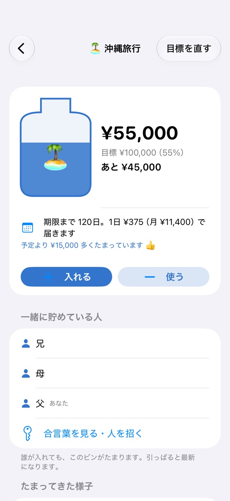
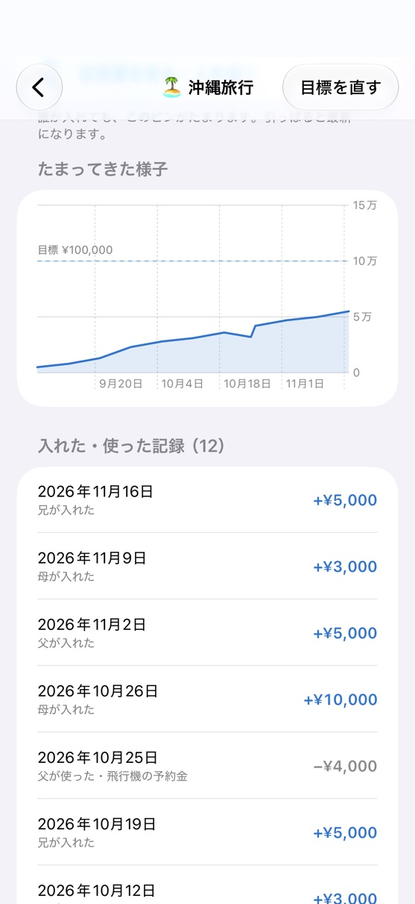
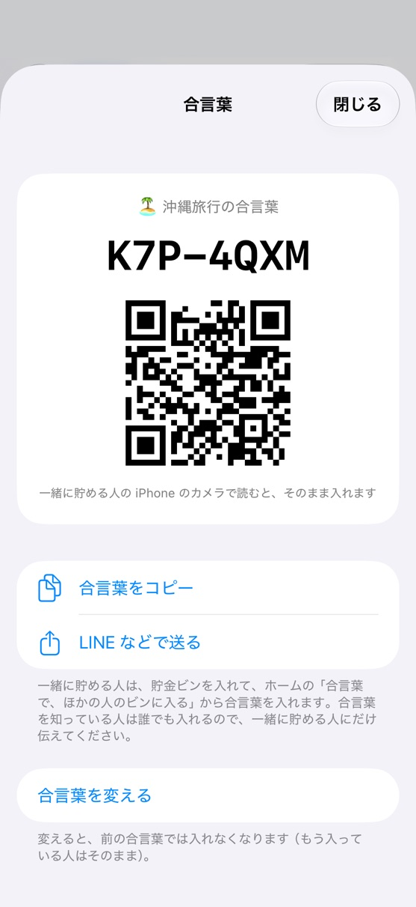

FEATURES
できること
目標ごとにビンを1つ
旅行・買い物・もしもの時用。目標の金額と期限を決めると、ビンがたまっていく様子と「あといくら」が分かります。
みんなで貯める
ビンに合言葉を付けて、LINE・QRコード・口で伝えるだけ。何人でも入れて、「母が入れた」「父が使った」と分かります。
1日いくらか分かる
期限を入れると「1日 ¥375 で届きます」「予定より多くたまっています」。たまってきた様子はグラフで。
記録が消えない
ひとりのビンはiPhoneとあなたのiCloudの両方に保存。入れ直しても、機種を変えても記録が戻ります。
SCREENS
画面



PRICE
値段
無料
¥0
- 目標のビンはいくつでも
- 記録・グラフ・1日いくら
- みんなで貯めるビン2つまで
- 合言葉で入るのはいつでも無料
プラス
¥650（買い切り）
- 広告が消える
- みんなで貯めるビンを3つ以上
- ホーム画面のウィジェット
- 記録のCSV書き出し
2026年12月13日までに入れた方へ
2026年12月13日までにこのアプリを入れた方は、買わなくてもずっと全部無料で使えます（広告も出ません）。
2026年12月13日までにこのアプリを入れた方は、買わなくてもずっと全部無料で使えます（広告も出ません）。
FAQ
よくある質問
お金を預けたり、銀行とつないだりしますか？
しません。入れた・使ったの記録を残すアプリです。お金そのものは動きません。
何人まで一緒に貯められますか？
人数の決まりはありません。合言葉を知っている人は誰でも入れるので、一緒に貯める人にだけ伝えてください。作った人は、合言葉を変えたり、人を外したりできます。
一緒に貯める人もアプリを入れる必要がありますか？
はい。貯金ビンを入れて、ホームの「合言葉で、ほかの人のビンに入る」から合言葉を入れます。合言葉で入るのは、いつでも無料です。
ビンごとに一緒に貯める人を変えられますか？
できます。合言葉はビンごとに付くので、「旅行は家族と」「プレゼントは兄弟と」のように分けられます。
機種変更の時はどうすればいいですか？
ひとりのビンは、同じ Apple アカウントで iCloud にサインインしていれば、新しいiPhoneに入れるだけで戻ります。みんなで貯めるビンも、同じ iCloud なら新しいiPhoneでそのまま続けられます。
SUPPORT
サポート
不具合・ご要望・ご質問は、メールでお知らせください。
お使いのiPhoneの機種・iOSのバージョン・アプリのバージョン（アプリの設定の一番下）を書いていただけると、早く調べられます。